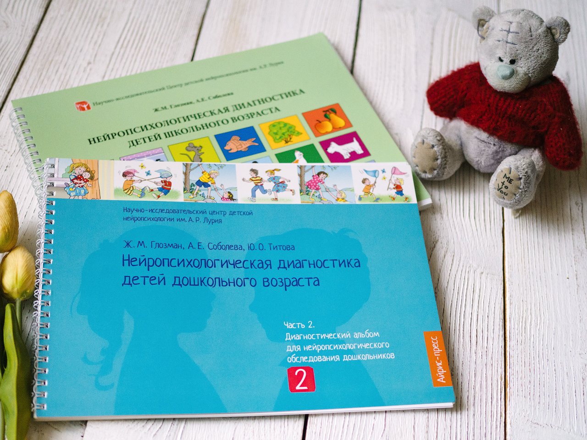
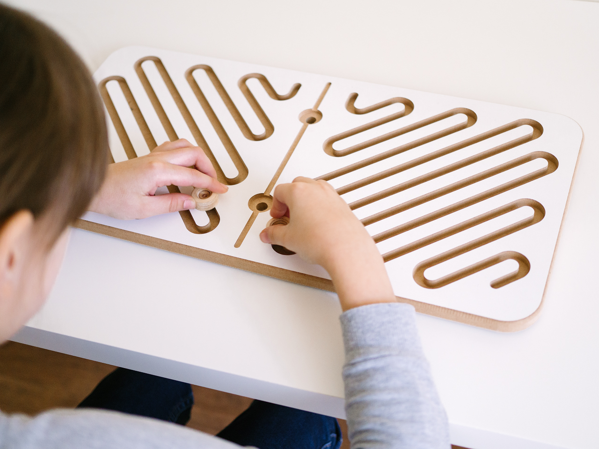

Подготовка ребёнка к нейропсихологической диагностике
Как снизить тревогу и сделать диагностику комфортной.
Читать статью →Помогаю разобраться в трудностях внимания, памяти, чтения, письма и саморегуляции у детей 5–14 лет. Нейропсихологическая диагностика и индивидуальные коррекционно-развивающие занятия.
Работаю с детьми 5–14 лет: помогаю понять возможные причины трудностей и подобрать подходящую помощь.
Проблемы с чтением, письмом, усвоением школьной программы.
Сложности с концентрацией, удержанием инструкции и самоконтролем.
Тревожность, истощаемость, сложности адаптации и поведения.
Развитие когнитивных функций и учебной готовности в нейроподходе.
Меня зовут Майя Манохина. Я детский психолог и нейропсихолог, работаю с детьми от 5 до 14 лет.
В своей практике я часто встречаюсь с трудностями обучения, внимания, памяти и саморегуляции. Ребёнок может знать правила, но продолжать допускать ошибки, медленно выполнять задания или быстро уставать. За похожими проявлениями могут стоять разные причины.
Основные направления моей работы — нейропсихологическая диагностика и индивидуальные коррекционно-развивающие занятия. Во время обследования я обращаю внимание не только на результат, но и на то, как ребёнок выполняет задания, какие ошибки допускает и какая помощь ему подходит.
По итогам диагностики родители получают подробное письменное заключение и рекомендации. При необходимости мы обсуждаем дальнейшую коррекционную работу.
Я окончила факультет психологии в 2006 году, а с 2017 года углублённо изучаю нейропсихологию. Продолжаю совершенствовать профессиональные знания и навыки.
Для меня важно видеть не только трудности ребёнка, но и его сильные стороны. Они помогают выстроить индивидуальную работу и поддержать его успехи.
Два основных формата работы: диагностика, чтобы разобраться в особенностях развития ребёнка, и индивидуальные занятия при необходимости.
Оценка особенностей познавательных функций ребёнка. Подробное письменное заключение, индивидуальные рекомендации и обратная связь с родителями.
До 60 минут
ЗаписатьсяЗанятия с учётом возраста, результатов диагностики и характера трудностей ребёнка.
45 минут
ЗаписатьсяПолезные материалы для родителей о развитии детей, внимании, обучении и эмоциональном состоянии.

Как снизить тревогу и сделать диагностику комфортной.
Читать статью →
Почему проблемы поведения не всегда означают диагноз.
Статья готовитсяВыберите удобный способ связи, чтобы задать вопрос или записать ребёнка.
Краснодар · Очные диагностики и занятия